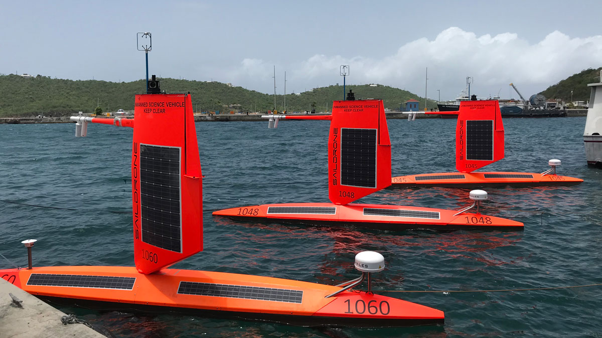

2022 Saildrone Atlantic Hurricane Mission

Seven saildrones are being deployed in the western Atlantic, Caribbean, and Gulf of Mexico during the 2022 Atlantic hurricane season, following the success of the experimental 2021 mission.
Keep up with the progress of the 2022 mission on the blog.
Objectives
(1) Measure near-surface atmospheric and upper-ocean parameters to calculate energy and momentum fluxes between the atmosphere and ocean outside and within hurricanes.
(2) Synchronize the deployments of saildrones and other uncrewed systems (ocean gliders, airdrones) and conventional assets (moored buoys, airborne atmospheric dropsondes and oceanic profilers) to measure the air-sea transition zone (upper ocean, air-sea interface, and marine atmospheric boundary layer).
(3) Transmit data in real-time to operational weather prediction centers to improve atmosphere-ocean initial conditions in forecast models.
(4) Apply the observations to understand how air-sea interaction affects hurricane intensity and to advance hurricane prediction models.
Deployments
Saildrone observations will cover August 1-October 30, 2022 in seven areas (highlighted by blue boxes in the map below) where chances of hurricane occurrence are high. Observations will be sent to worldwide weather prediction centers in real time to assist their operational forecasts. Data will be released for public use in near real time. This project also involves partnerships with NOAA's Environmental Modeling Center (EMC) of the National Weather Service and the CoastWatch of NOAA's National Environmental Satellite and Data Information Service (NESDIS).
.png)
NOAA Mission Team:
Gregory Foltz, AOML (Co-Lead)
Chidong Zhang, PMEL (Co-Lead)
Andy Chiodi, PMEL/University of Washington
Calvin Mordy, PMEL/University of Washington
Catherine Edwards, Skidaway Institute of Oceanography, University of Georgia
Christian Meinig, PMEL
Dongxiao Zhang, PMEL/University of Washington
Edward (Ned) Cokelet, PMEL
Eugene Burger, PMEL
Francis Bringas, AOML
Gustavo Goni, AOML
Hristina G. Hristova, PMEL/University of Hawaii
Hyun-Sook Kim, AOML
Kathleen E. Bailey, U.S. Integrated Ocean Observing System
Kevin O'Brien, PMEL/University of Washington
Noah Lawrence-Slavas, PMEL
Joaquin Trinanes, AOML/University of Santiago, Spain
Jun Zhang, AOML/University of Miami
With support of
Alison Segura, University of Texas at El Paso (NOAA NERTO Summer Intern)
Brian D'Souza, University of Illinois at Urbana-Champaign (NOAA Lapenta Summer Intern)
Colman Bashore, Middlebury College (NOAA PMEL Summer Intern)
Shuichi Mori, JAMSTEC
This mission is supported by NOAA's Office of Oceanic and Atmospheric Research (OAR), NOAA's Office of Marine and Aviation Operations (OMAO), Weather Program Office (WPO), and Global Ocean Monitoring and Observing (GOMO) in collaboration with Saildrone, Inc.